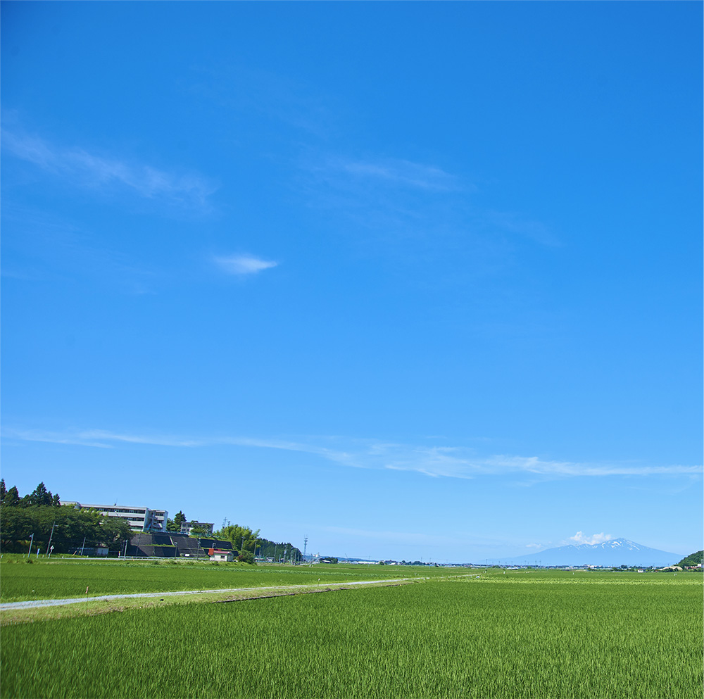
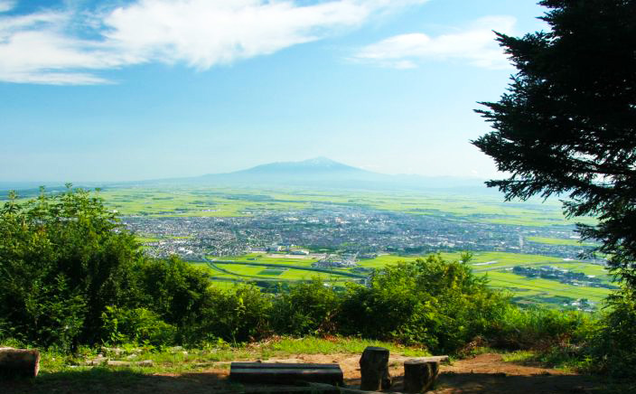
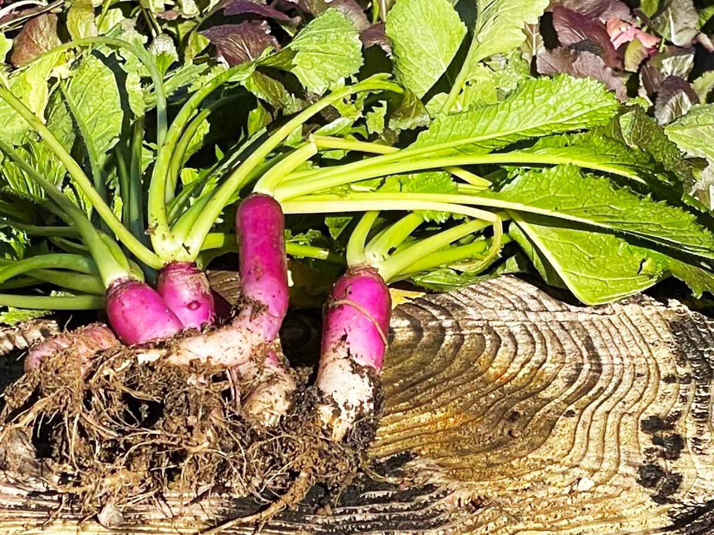
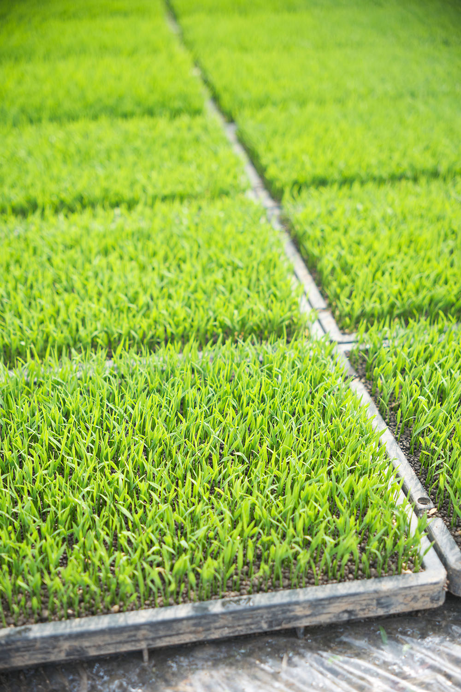
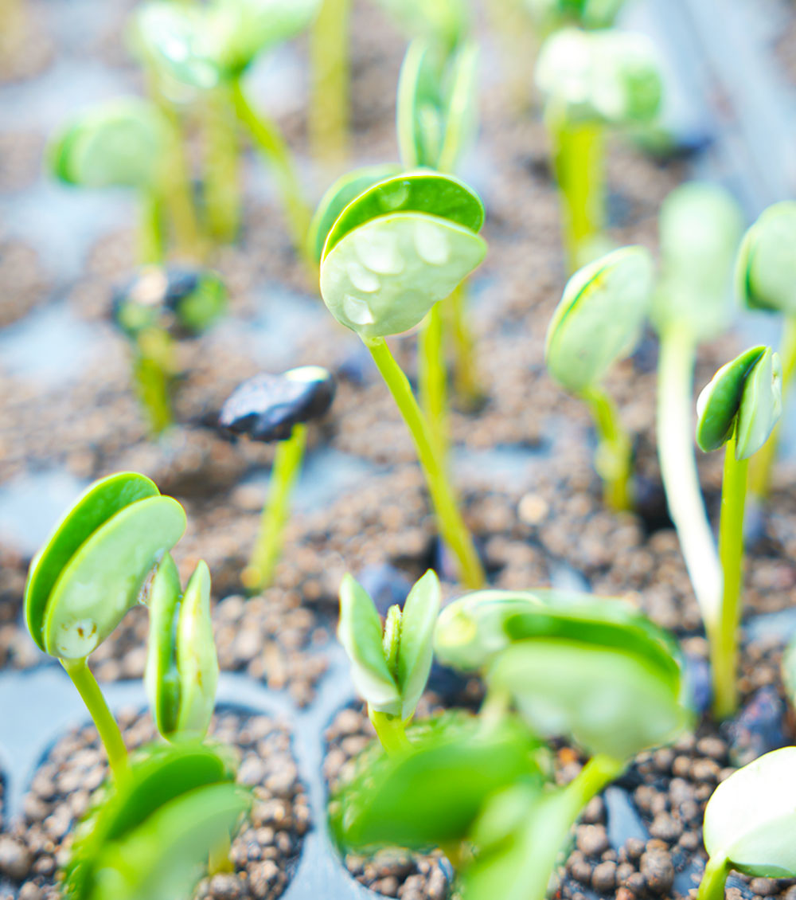
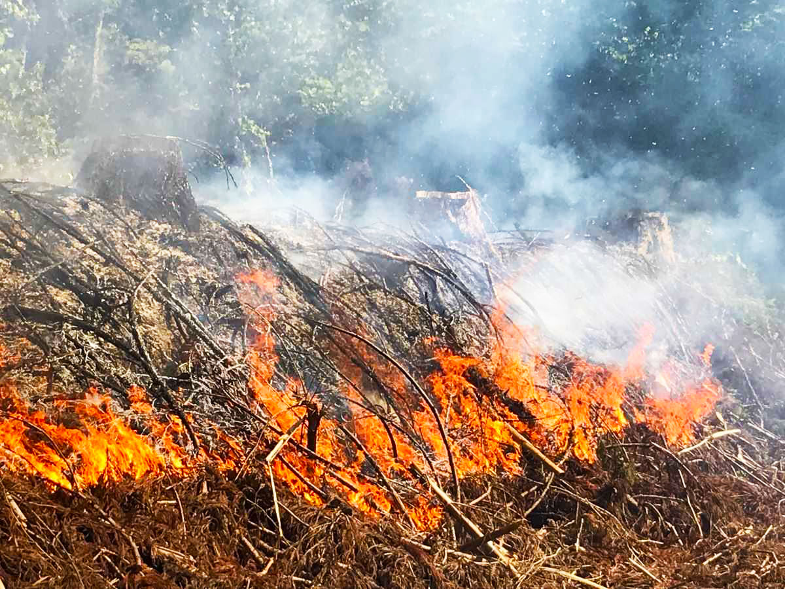

株式会社
菜な八
Go farming nanahachi Inc.

お米と、 だだちゃ豆と、 藤沢かぶと。

About Us 自然の恵み
庄内平野を一望できる金峯山の麓 四季の彩りが美しく 緑々とした自然と 豊かな水と温泉 生まれ育った 鶴岡市藤沢で わたしたちは 農業を営んでおります

About Us 地域の宝
山形県鶴岡市は2014年に 「ユネスコ食文化創造都市」に認定 「在来作物」は 60種類以上確認されており その栽培方法とともに継承された 「生きた文化財」 地域で守り継いできた種を紡ぐ日々

Rice 稲 作
滋養に富んだ雪解け水と 稲作に適した気候の下で 丁寧に作物と向き合う 作付面積は約24ha 品種は つや姫 雪若丸 はえぬき

Beans だだちゃ豆
夏の風物詩 鶴岡市特産のだだちゃ豆 他にない独特の風味と 深い甘みが特徴 鮮度が命のため 早朝3時から収穫 7月末から9月上旬まで また自ら採種・選抜し 次の年へ繋いでいく

Turnip 藤沢かぶ
8月中旬 真夏の日差しの中 伝統の焼畑農法は行われる 山払いをし種を蒔く 10月上旬 濃いピンクと白の 綺麗なグラデーション 藤沢かぶを収穫する